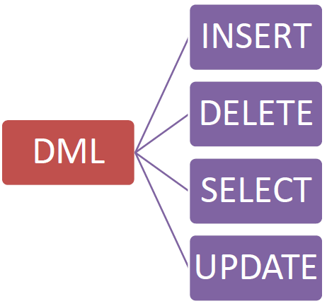

Guia de SQL
Esta página estrutura os principais comandos SQL para manipulação e definição de dados. Pense no SQL como a linguagem que você usa para conversar com um banco de dados, como se fosse uma grande biblioteca digital.
DML: A Linguagem para Organizar os Brinquedos
A DML (Data Manipulation Language) é a linguagem que usamos para 'conversar' com a nossa caixa de brinquedos, ou seja, com o nosso banco de dados. Ela nos dá quatro comandos básicos para organizar e cuidar dos nossos dados.
-
SELECT (Pegar): Para ver e pegar um brinquedo de dentro da caixa. Se você quiser saber o que tem na sua caixa, você usa o
SELECTpara ver os brinquedos que estão lá. -
INSERT (Guardar): Para guardar um brinquedo novo que você ganhou. É isso que o
INSERTfaz: ele adiciona novos dados. -
UPDATE (Arrumar): Para arrumar a cor de um brinquedo que já está na caixa. Se a cor do seu carrinho favorito desbotou, você usa o
UPDATEpara pintá-lo de novo. - DELETE (Jogar Fora): Para jogar fora um brinquedo que você não quer mais, removendo-o da sua caixa para sempre.
Em resumo, SELECT para pegar, INSERT para guardar, UPDATE para arrumar e DELETE para jogar fora. Esses quatro comandos são a base para interagir com qualquer banco de dados.
